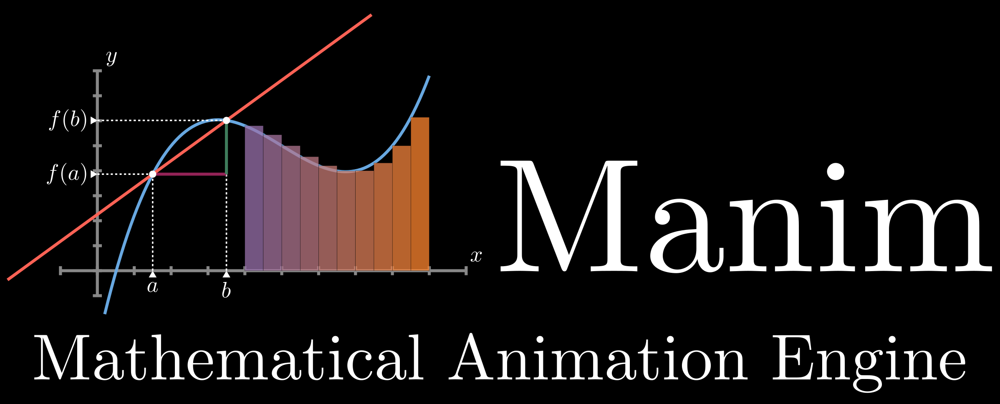

Creating animations with
manim
Nathan Whitehead
Boise Software Developer Group
7/8/2025
<p class="leftalign"> <a href="https://github.com/nwhitehead/nwhitehead.github.io/manimtalk"> <svg xmlns="http://www.w3.org/2000/svg" width="48" height="48" viewBox="0 0 24 24"><path fill="currentColor" d="M12 2A10 10 0 0 0 2 12c0 4.42 2.87 8.17 6.84 9.5c.5.08.66-.23.66-.5v-1.69c-2.77.6-3.36-1.34-3.36-1.34c-.46-1.16-1.11-1.47-1.11-1.47c-.91-.62.07-.6.07-.6c1 .07 1.53 1.03 1.53 1.03c.87 1.52 2.34 1.07 2.91.83c.09-.65.35-1.09.63-1.34c-2.22-.25-4.55-1.11-4.55-4.92c0-1.11.38-2 1.03-2.71c-.1-.25-.45-1.29.1-2.64c0 0 .84-.27 2.75 1.02c.79-.22 1.65-.33 2.5-.33s1.71.11 2.5.33c1.91-1.29 2.75-1.02 2.75-1.02c.55 1.35.2 2.39.1 2.64c.65.71 1.03 1.6 1.03 2.71c0 3.82-2.34 4.66-4.57 4.91c.36.31.69.92.69 1.85V21c0 .27.16.59.67.5C19.14 20.16 22 16.42 22 12A10 10 0 0 0 12 2"/></svg> nwhitehead/nwhitehead.github.io/manimtalk </a><br /> <a href="https://bsky.app/profile/nathanwhitehead.bsky.social"> <svg xmlns="http://www.w3.org/2000/svg" width="48" height="48" viewBox="0 0 24 24"><path fill="currentColor" d="M12 11.388c-.906-1.761-3.372-5.044-5.665-6.662c-2.197-1.55-3.034-1.283-3.583-1.033C2.116 3.978 2 4.955 2 5.528c0 .575.315 4.709.52 5.4c.68 2.28 3.094 3.05 5.32 2.803c-3.26.483-6.157 1.67-2.36 5.898c4.178 4.325 5.726-.927 6.52-3.59c.794 2.663 1.708 7.726 6.444 3.59c3.556-3.59.977-5.415-2.283-5.898c2.225.247 4.64-.523 5.319-2.803c.205-.69.52-4.825.52-5.399c0-.575-.116-1.55-.752-1.838c-.549-.248-1.386-.517-3.583 1.033c-2.293 1.621-4.76 4.904-5.665 6.664"/></svg> nathanwhitehead.bsky.social </a><br /> <a href="mailto:nwhitehe@gmail.com"> <svg xmlns="http://www.w3.org/2000/svg" width="48" height="48" viewBox="0 0 24 24"><path fill="currentColor" d="M20 4H4c-1.1 0-1.99.9-1.99 2L2 18c0 1.1.9 2 2 2h16c1.1 0 2-.9 2-2V6c0-1.1-.9-2-2-2m0 4l-8 5l-8-5V6l8 5l8-5z"/></svg> nwhitehe@gmail.com </a><br /> <br /> Slides at <a href="https://nwhitehead.github.io/slides/"> nwhitehead.github.io/manimtalk/ </a><br /> </p> --- ## About Me * Founder of _Shimmer Math Labs_ <br>(my money-losing garage startup) * Previously worked at NVIDIA, Qualcomm, Amazon Lab126 * I like programming math * Currently working on synthesizer algorithms and audio deep learning --- ## Why `manim`?  --- ### Effective communication * Technical topics have <span class="special">_complexity_</span> * Less effective to more effective: <p><nobr>pure text</nobr> → <nobr>one diagram</nobr> → <nobr>sequence of diagrams</nobr> → <span class="special">animation</span> → <nobr>interactive animation</nobr></p> --- ### Correctness * We like <span class="special">_version control_</span> * Prefer <span class="special">_real data_</span> over fake data * Coders gotta code ‚ù§Ô∏è --- ### Background <p> <br /> Grant Sanderson<br > Creator of <em>3Blue1Brown</em> (YouTube channel)<br /> Creator of <code>manim</code><br /> AMS Communications Award winner 2023 </p> --- <p> <br /> <em>Differential equations, a tourist's guide</em><br />3Blue1Brown (2019) <br /> </p> --- <p> <br /> <em>Large Language Models explained briefly</em><br />3Blue1Brown (2025) <br /> </p> --- ### History * Original `manim` code for Grant's channel * Open sourced (MIT üò∏) * Fork developed by community (2020-present) <a href="https://www.manim.community/">https://www.manim.community/</a> <small class="leftalign"><span class="special">Be careful!</span><br />StackOverflow responses and LLM answers may get confused between original and community edition fork, they are slightly different.<br /> <br />New projects should always use the community edition.</small> --- ## Installation --- ### Linux ```bash # Make sure dependencies are present sudo apt update sudo apt install build-essential python3-dev \ libcairo2-dev libpango1.0-dev texlive-full # Install uv (python package tool) curl -LsSf https://astral.sh/uv/install.sh | sh # Start a uv project uv init projectname && cd projectname # Add manim to project uv add manim ``` <p><small><a href="https://docs.astral.sh/uv/getting-started/installation/">https://docs.astral.sh/uv/getting-started/installation/</a></small></p> <p><small><a href="https://docs.manim.community/en/stable/installation/uv.html">https://docs.manim.community/en/stable/installation/uv.html</a></small></p> --- ### Windows ```powershell # Install uv (python package tool) powershell -ExecutionPolicy ByPass -c ` "irm https://astral.sh/uv/install.ps1 | iex" # Start a uv project uv init projectname && cd projectname # Add manim to project uv add manim ``` --- ### MacOS ```bash # Install uv (python package tool) curl -LsSf https://astral.sh/uv/install.sh | sh # Start a uv project uv init projectname && cd projectname # Add manim to project uv add manim ``` --- ## Basics --- ### Python Package ```py from manim import * class CreateCircle(Scene): def construct(self): # Create a circle circle = Circle() # Set the color and transparency circle.set_fill(PINK, opacity=0.5) # Show the circle being drawn self.play(Create(circle)) ``` <small>Example file `example.py`</small> --- ```bash manim render -pql example.py CreateCircle ``` <video src="gfx/CreateCircle.mp4" controls></video> <small><code>media/videos/example/480p15/CreateCircle.mp4</code></small> --- ### Options ```bash manim render -pql example.py CreateCircle ``` ```text -p Preview the rendered video -ql Choose low quality Quality levels: -ql 854x480 15FPS -qm 1280x720 30FPS -qh 1920x1080 60FPS -qp 2560x1440 60FPS -qk 3840x2160 60FPS ``` --- ### `-qp` Quality Demo <video src="gfx/CreateCircle-qp.mp4" controls></video> <small><code>media/videos/example/1440p60/CreateCircle.mp4</code></small> --- ### Quality Levels * <span class="special">Low</span> quality level is fastest, for development * <span class="special">Medium</span> is good for slides * <span class="special">High</span> or higher is good for YouTube --- ### Concepts * `manim` is a Python package * `manim` is a command line tool * Define classes that descent from `Scene` * More than 1 `Scene` per file allowed * Render scene(s) using command line tool --- ```py # Draw two things next to each other # NOTES: Actually generates a static image, not a video. class TwoObjects(Scene): def construct(self): square = Square() square.set_fill(BLUE, opacity=1.0) circle = Circle() circle.set_fill(PINK, opacity=1.0) square.next_to(circle, RIGHT) self.add(square) self.add(circle) ``` --- --- ```py # Show two objects, one then the next # NOTES: They pop into existence. class TwoObjectsWait(Scene): def construct(self): square = Square() square.set_fill(RED, opacity=1.0) circle = Circle() circle.set_fill(YELLOW, opacity=1.0) square.next_to(circle, RIGHT) self.add(square) self.wait() self.add(circle) self.wait() ``` --- <video src="gfx/TwoObjectsWait.mp4" controls></video> --- ```py # Draw two objects, one then the next # NOTES: `Create` animates drawing based on # vectorization of shape. class TwoObjectsDraw(Scene): def construct(self): square = Square() square.set_fill(GREEN, opacity=1.0) circle = Circle() circle.set_fill(PURPLE, opacity=1.0) square.next_to(circle, RIGHT) self.play(Create(square)) self.wait() self.play(Create(circle)) self.wait() ``` --- <video src="gfx/TwoObjectsDraw.mp4" controls></video> --- ```py # Draw three objects with manual positioning class ThreeObjects(Scene): def construct(self): for i in range(3): square = Square() square.shift(RIGHT * 3 * i + LEFT * 3) self.play(Create(square)) self.wait() ``` --- <video src="gfx/ThreeObjects.mp4" controls></video> --- ```py # Draw shapes with different positions and alignments class ObjectPlacement(Scene): def construct(self): circle = Circle() square = Square() triangle = Triangle() circle.move_to(LEFT * 2) square.next_to(circle, LEFT) triangle.align_to(circle, LEFT) self.add(circle, square, triangle) self.wait(1) ``` --- <video src="gfx/ObjectPlacement.mp4" controls></video> --- ```py # Draws a square not at default position then slide left # NOTES: `shift()` does adjustment immediately, # `animate.shift()` makes an animation. class ShiftObject(Scene): def construct(self): square = Square() square.shift(RIGHT * 2) square.set_fill(RED, opacity=0.5) self.play(Create(square)) self.play(square.animate.shift(LEFT * 2)) ``` --- <video src="gfx/ShiftObject.mp4" controls></video> --- ```py # Draws a square and a circle then slides them to the right # NOTES: We construct a `VGroup` to contain multiple # `Mobject`s. class ShiftObjects(Scene): def construct(self): square = Square() circle = Circle() circle.next_to(square, RIGHT) group = VGroup() group.add(square) group.add(circle) self.play(Create(group)) self.play(group.animate.shift(RIGHT)) ``` --- <video src="gfx/ShiftObjects.mp4" controls></video> --- ```py # Draws a rectangle, rectangle with internal grid, and arrow # NOTES: Uses `get_center()` and `get_top()` to get points # of existing `Mobject`s. class DemoObjects(Scene): def construct(self): rect = Rectangle(width=2.0, height=4.0) grid = Rectangle(width=4.0, height=2.0, grid_xstep=1.0, grid_ystep=1.0) grid.next_to(rect, RIGHT) arrow = Arrow(start=grid.get_center(), buff=0, end=rect.get_top(), color=YELLOW) group = VGroup() group.add(rect, grid, arrow) self.play(Create(group), run_time=4.0) self.wait() ``` --- <video src="gfx/DemoObjects.mp4" controls></video> --- ## CS Examples --- ### Linked List --- ```py stretch # Show a representation of a linked list with arrows ## NOTES: Uses `next_to()` with `buff` to space out. class LinkedList1(Scene): def construct(self): node1 = Rectangle(width=2.0, height=1.0, grid_xstep=1.0) node2 = Rectangle(width=2.0, height=1.0, grid_xstep=1.0) node2.next_to(node1, RIGHT, buff=1.0) arrow12 = Arrow(start=node1.get_center() + RIGHT / 2, end=node2.get_left(), buff=0) node3 = Rectangle(width=2.0, height=1.0, grid_xstep=1.0) node3.next_to(node2, RIGHT, buff=1.0) arrow23 = Arrow(start=node2.get_center() + RIGHT / 2, end=node3.get_left(), buff=0) group = VGroup(node1, node2, node3, arrow12, arrow23) group.shift(LEFT * 2.0) self.play(Create(group)) self.wait() ``` --- <video src="gfx/LinkedList1.mp4" controls></video> --- ```py stretch # Show a linked list animation for removing middle element class LinkedListRemove(Scene): def construct(self): # ... Same setup code as LinkedList1 self.play(Create(group)) self.wait() self.play(FadeOut(node2, arrow23)) self.wait() arrow13 = Arrow(start=node1.get_center() + RIGHT / 2, end=node3.get_left(), buff=0) # Change arrow12 into arrow13 smoothly self.play(Transform(arrow12, arrow13)) self.wait() ``` --- <video src="gfx/LinkedListRemove.mp4" controls></video> --- ```py stretch # Show a linked list animation for removing middle element ## This time with more details. class LinkedListRemove2(Scene): def construct(self): # ... Mostly same setup code as LinkedList1 arrow12 = Arrow(start=node1.get_center() + RIGHT / 2, end=node2.get_left(), buff=0, color=YELLOW) arrow23 = Arrow(start=node2.get_center() + RIGHT / 2, end=node3.get_left(), buff=0, color=YELLOW) node1_text = Text('a', color=BLUE).next_to(node1, UP) node2_text = Text('b', color=BLUE).next_to(node2, UP) node3_text = Text('c', color=BLUE).next_to(node3, UP) node3_x = Dot(radius=0.3, color=YELLOW).shift( node3.get_center() + RIGHT / 2) group = VGroup(node1, node1_text, node2, node2_text, node3, node3_text, node3_x, arrow12, arrow23) # ... Same animation code as before ``` --- <video src="gfx/LinkedListRemove2.mp4" controls></video> --- ### Binary Tree --- ```py stretch # Returns group of binary tree def bt(value, left=None, right=None): root = VGroup(Circle(0.75), Text(f'{value}')) l = left if left is not None else Circle(0.25, stroke_opacity=0) r = right if right is not None else Circle(0.25, stroke_opacity=0) # Group left and right next to each other, top aligned r.next_to(l, RIGHT) r.align_to(l, UP) children = VGroup(l, r) children.next_to(root, DOWN, buff=0.5) tree = VGroup(root, children) if left is not None: tree.add(Arrow(start=root.get_bottom(), buff=0, end=l.get_top(), stroke_width=3.0)) if right is not None: tree.add(Arrow(start=root.get_bottom(), buff=0, end=r.get_top(), stroke_width=3.0)) return tree ``` --- ```py stretch class BinaryTree1(Scene): def construct(self): tree = bt(7, bt(5), bt(10, bt(8), bt(11))) tree.center() self.play(Create(tree)) self.wait() ``` --- <video src="gfx/BinaryTree1.mp4" controls></video> --- ```py stretch class BinaryTree2(Scene): def construct(self): tree1 = bt(7, bt(5), bt(10, bt(8), bt(11))) tree1.center() tree2 = bt(10, bt(7, bt(5), bt(8)), bt(11)) tree2.center() self.play(Create(tree1)) self.wait() self.play(FadeTransform(tree1, tree2)) self.wait() ``` --- <video src="gfx/BinaryTree2.mp4" controls></video> --- ```py stretch # Let's show an insert path class BinaryTree3(Scene): def construct(self): tree1 = bt(10, bt(7, bt(5), bt(8)), bt(11)) tree1.center().scale(0.7) self.play(Create(tree1)) node = VGroup(Circle(0.75, color=BLACK, stroke_color=BLUE, fill_opacity=1), Text('6')).scale(0.7) node.next_to(tree1[0], UP) # above 10 circle self.play(Create(node)) self.play(node.animate.next_to(tree1[1][0], UP)) self.wait() self.play(node.animate.next_to(tree1[1][0][1][0], UP)) self.wait() # Slide it near where it needs to be in new tree self.play(node.animate.shift(2.5 * DOWN + 0.5 * RIGHT)) self.wait() tree2= bt(10, bt(7, bt(5, None, bt(6)), bt(8)), bt(11)) tree2.center().scale(0.7) self.remove(node) self.play(Transform(tree1, tree2)) self.wait() ``` --- <video src="gfx/BinaryTree3.mp4" controls></video> --- ### Deep Learning Functional Diagrams --- ```py stretch class Activation(VGroup): def __init__(self, height=1.0, tanh=False): s = Rectangle(fill_opacity=1.0, width=2.0, height=2.0 * height, fill_color=BLACK) p1 = np.array([-1, -0.8 * height, 0]) p2 = np.array([0, -0.8 * height, 0]) p3 = np.array([0, 0.8 * height, 0]) p4 = np.array([1, 0.8 * height, 0]) b = CubicBezier(p1, p2, p3, p4, color=BLUE) a = Line(LEFT + DOWN * 0.8 * height, RIGHT + DOWN * 0.8 * height, stroke_width=2.0) if not tanh else Line( LEFT, RIGHT, stroke_width=2.0) self.inputs = [s.get_top()] self.outputs = [s.get_bottom()] super().__init__(s, a, b) class Activation1(Scene): def construct(self): act1 = Activation() act2 = Activation(tanh=True).next_to(act1, DOWN) network = VGroup(act1, act2).center() self.play(Create(network)) self.wait() ``` --- <video src="gfx/Activation1.mp4" controls></video> --- ```py stretch class LinearActivation(VGroup): def __init__(self, inputs=1, txt=r"$d_{in}, d_{out}$", activation_height=1.0, tanh=False): ab = Activation(height=activation_height, tanh=tanh) \ .set_z_index(1) linear = VGroup( Rectangle(width=2.0, height=0.5, fill_opacity=1, fill_color=BLACK).set_z_index(1), Tex(txt).scale(0.8), ).set_z_index(1).next_to(ab, UP) c = Line(linear[0].get_bottom(), ab.get_top()) cxs = VGroup([Line(ORIGIN, UP * 0.2) for i in range(inputs)]) \ .arrange(buff=2.8 / inputs) \ .shift(linear[0].get_top() + UP * 0.1) cy = Line(ab.get_bottom(), ab.get_bottom() + DOWN / 5) self.cy = cy self.cxs = cxs super().__init__(linear, ab, cxs, c, cy) def get_inputs(self): return [c.get_center() for c in self.cxs] def get_outputs(self): return [self.cy.get_center()] ``` --- ```py stretch class LinearScene(Scene): def construct(self): b = LinearActivation() lbl_x = Tex("$x$").next_to(b, UP) lbl_y = Tex("$y$").next_to(b, DOWN) v = VGroup(lbl_x, b, lbl_y) self.play(Create(v)) self.wait(1) ``` --- <video src="gfx/LinearScene.mp4" controls></video> --- ```py stretch class MLP(Scene): def construct(self): b = LinearActivation(txt=r'784, 200', activation_height=0.5) lbl_x = Tex("$x$").next_to(b, UP) c = LinearActivation(txt=r'200, 200', activation_height=0.5) \ .next_to(b, DOWN, buff=-0.05) d = LinearActivation(txt=r'200, 10', activation_height=0.5) \ .next_to(c, DOWN, buff=-0.05) lbl_y = Tex("$y$").next_to(d, DOWN) v = VGroup(lbl_x, b, c, d, lbl_y) \ .center().scale(0.8) self.play(Create(v), run_time=4) self.wait(1) ``` --- <video src="gfx/MLP.mp4" controls></video> --- ```py stretch def gru(): positions = [ (-2, -1), (2, -1), (-1, -6), # ... more ] contents = [ LinearActivation(txt=r'Reset', inputs=2), LinearActivation(txt=r'Update', inputs=2), OpBox('⊙').scale(0.5), # ... more ] edges = [ ((0, 0), (3, 0)), ((1, 0), (16, 0)), # ... more ] v = VGroup() for i in range(len(positions)): x, y = positions[i] v.add(contents[i].shift((RIGHT * x + UP * y))) for edge in edges: (i, i_n), (j, j_n) = edge start = contents[i].get_outputs()[i_n] end = contents[j].get_inputs()[j_n] line = Line(start, end, buff=0, stroke_width=4.0) v.add(line) return v ``` --- ```py stretch class GRUScene(Scene): def construct(self): g = gru().scale(0.7).shift(UP * 2.7) self.play(Create(g, run_time=6.0)) self.wait(1) ``` --- <video src="gfx/GRUScene.mp4" controls></video> --- ### More Examples https://docs.manim.community/en/stable/examples.html --- ## Thoughts --- ### Limitations * `manim` not great for final <span class="special">video composition</span> (e.g. talking head, to animation, back to head) * <span class="special">Timing</span> against voiceovers can be tedious * Imperative stateful style, somewhat <span class="special">brittle</span> * <span class="special">Interactivity</span> is not strong point --- ### When to use * Works for <span class="special">technical diagrams</span> of all kinds * Animated state changes * Standalone animations in slides / full videos * Can use <span class="special">Python ecosystem</span> for data & computation * Easy to programmatically generate videos --- ### Learning more https://www.manim.community/ https://docs.manim.community/en/stable/reference.html https://docs.manim.community/en/stable/examples.html https://www.manim.community/awesome/ --- <video src="gfx/codeday16.mp4" controls></video> <small>Advent of Code Day 16 Visualization, <em>Dan4Life</em> (2024)</small> <small>https://www.youtube.com/watch?v=Z3bCwkqk0Oc</small> --- The End